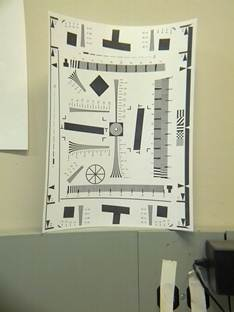
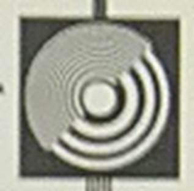
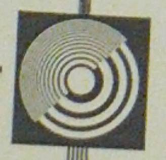
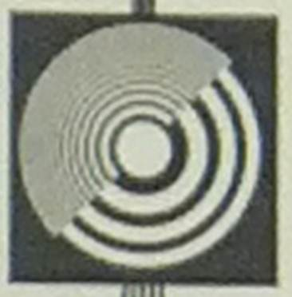
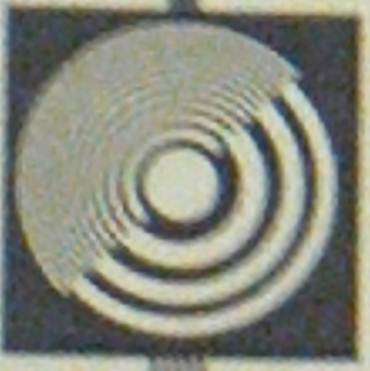

| importance |
Samsung WB850F |
Polaroid SC1630 |
Nikon Coolpix s800c |
Samsung Galaxy Camera |
||
| GPS |
must |
yes |
yes |
yes |
yes |
|
| Wifi |
important |
yes |
yes |
yes |
yes |
|
| save to cloud |
important |
yes |
||||
| save to phone |
important |
yes (manually) |
||||
| remote control |
important |
? |
||||
| sync time and/or GPS |
important |
? |
||||
| Compass |
plus |
yes |
||||
| Accelerometer |
plus |
? |
||||
| pixels |
important |
16.2 Mp |
16 Mp |
16 Mp |
16 Mp |
|
| zoom |
plus |
21x |
3x |
10x |
21x |
|
| USB chargeable |
important |
yes |
||||
| Sensitivity |
plus |
100-3200 |
up to 3200 |
125-3200 |
||
| aperture |
plus |
f/2.8-5.9 |
f/3.1-5.6 |
f/3.2-5.8 |
||
| fast shutter |
important |
1/4000 |
||||
| HD |
plus |
1080p |
720p |
1080p |
||
| image stabilization |
plus |
yes |
||||
| full manual mode |
plus |
yes |
||||
| burst mode [fps/frames per burst] |
plus |
10/8 |
8.1/ |
|||
| android |
no |
yes |
2.3 |
4.1 |
||
| other |
backlid CMOS lens-shift vibration detection better distance from autofocus? |
Original size: 960x1280

Cut of center 68x67:

Original size: 960x1280, digital zoom, size after cut: 487x468

The
resolution is better!
Original: 1944x2592, cut 118x120:

Original: 1944x2592, digital zoom, cut 940x943:

The resolution seems to be the same, the same as
without digital zoom and the same as the 960x1280 image with digital
zooom.
Conclusion: For images that use less than the full resolution (1944x2592), digital zoom gives you more details. For images with full resolution (1944x2592), digital zoom just blows the image up, it gives you no more details.